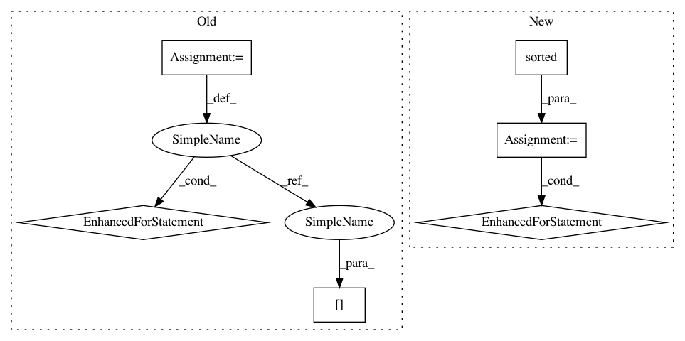

b8732f422d71819a250bd33e958766c4a709fbff,create_website.py,,build_index,#,381
Before Change
<h3>Distance: %s</h3>
% dm.capitalize()
for ds in sorted_datasets:
for idd in sorted([e for e in datasets.keys() \
if e.split("_")[0] == ds and e.split("_")[-1] == dm], \
key = lambda elem: int(elem.split("_")[1])):
ds_name = query_info[idd]["dataset"] + " (k = " + \
str(query_info[idd]["count"]) + ")"
output_str +=
<a href="./%(name)s.html">
<div class="row" id="%(name)s">
<div class = "col-md-4 bg-success">
<h4>%(desc)s</h4>
</div>
<div class = "col-md-8">
<img class = "img-responsive" src="%(name)s.png" />
</div>
</div>
</a>
<hr />
% { "desc" : ds_name, "name" : idd }
output_str +=
<h2 id="algorithms">Results by Algorithm</h2>
<ul class="list-inline"><b>Algorithms:</b>
algorithm_names = algorithms.keys()
After Change
matching_datasets = [e for e in datasets.keys() \
if get_dataset_from_desc(e) == ds and \
get_distance_from_desc(e) == dm]
sorted_matches = sorted(matching_datasets, \
key = lambda e: int(get_count_from_desc(e)))
for idd in sorted_matches:
ds_name = get_dataset_from_desc(idd) + " (k = " + \
get_count_from_desc(idd) + ")"
output_str += get_row_desc(idd, ds_name)
output_str +=
<h2 id="algorithms">Results by Algorithm</h2>
<ul class="list-inline"><b>Algorithms:</b>
algorithm_names = algorithms.keys()
In pattern: SUPERPATTERN
Frequency: 3
Non-data size: 6
Instances
Project Name: erikbern/ann-benchmarks
Commit Name: b8732f422d71819a250bd33e958766c4a709fbff
Time: 2018-02-24
Author: maau@itu.dk
File Name: create_website.py
Class Name:
Method Name: build_index
Project Name: erikbern/ann-benchmarks
Commit Name: b8732f422d71819a250bd33e958766c4a709fbff
Time: 2018-02-24
Author: maau@itu.dk
File Name: create_website.py
Class Name:
Method Name: build_index
Project Name: fmfn/BayesianOptimization
Commit Name: a470d2d3ae0bb8b9407c8ead7149d47fc5b25257
Time: 2016-12-27
Author: fmfnogueira@gmail.com
File Name: bayes_opt/bayesian_optimization.py
Class Name: BayesianOptimization
Method Name: initialize
Project Name: CyberReboot/NetworkML
Commit Name: cd83fed56a184063215f932ef768f8834328654c
Time: 2020-04-01
Author: josh@vandervecken.com
File Name: networkml/featurizers/funcs/host.py
Class Name: HostBase
Method Name: _get_flags